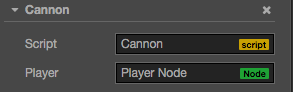

Access node and other component
You can edit node and component in the Properties panel, or dynamically modify in script as well. The advantage of dynamic modification is let you modify or transit property continuously for a period of time, to achieve some easing effects. Script can also be used to respond player inputs, or modify-create-or-destroy node and component, so as to implement various game logics. To achieve these, you should acquire the node or component which you want to modify.
In this tutorial, we will introduce how to
- get the node which a component belongs to
- get other component
- setup node and component in Properties panel
- find child node
- find node in global
- access exists variable
Get the node which the component belong
Getting the node which the component belong is easy, just use this.node variable in component:
start: function () {
var node = this.node;
node.x = 100;
}
Get other component
You will get other component in the same node frequently, that is where getComponent comes in, it help you to find the component you need.
start: function () {
var label = this.getComponent(cc.Label);
var text = this.name + ' started';
// Change the text in Label Component
label.string = text;
}
You can also pass in a class name for the getComponent. For user defined components, the class name is simply the filename of the script, and case sensitive. For example, if a component declared in "SinRotate.js", its class name will be "SinRotate".
var label = this.getComponent("SinRotate");
There is also a getComponent method on node, they are the same thing.
start: function () {
cc.log( this.node.getComponent(cc.Label) === this.getComponent(cc.Label) ); // true
}
If the component does not exist in the node, getComponent will return null. If you are trying to access a null value at runtime, the "TypeError" exception will be thrown. So always remember to check if you are not sure of it.
start: function () {
var label = this.getComponent(cc.Label);
if (label) {
label.string = "Hello";
}
else {
cc.error("Something wrong?");
}
}
Get other node and their component
It is not enough to access to components in the same node, scripts often need to interact between nodes. For example, a cannon which takes aim at player by itself, need to constantly get player's position. Cocos Creator provider some different ways to retrieve other node and their component.
Use Properties panel to link node
The most obvious and straightforward is to set object in Properties panel. Take node as an example, it just need to declare a property which type is cc.Node:
// Cannon.js
cc.Class({
extends: cc.Component,
properties: {
// declare player property
player: {
default: null,
type: cc.Node
}
}
});
Above code declared a property named player in properties, its default value is null, its object type is cc.Node. It is the equivalent of the public cc.Node player = null; statement in other programe language. In Properties panel, the component will looks like this after the script compiled:

Then you can drag and drop any node from Node Tree panel to the Player control:

This way, the player property will be set successfully, you can access it in your script directly:
// Cannon.js
var Player = require("Player");
cc.Class({
extends: cc.Component,
properties: {
// declare player property
player: {
default: null,
type: cc.Node
}
},
start: function () {
var playerComp = this.player.getComponent(Player);
this.checkPlayer(playerComp);
},
// ...
});
Use Properties panel to link component
In the example above, if you set the property's type to Player component, when you drag the "Player Node" to Properties panel, player property will be set to the Player component in the node. Then you don't need to call getComponent for yourself.
// Cannon.js
var Player = require("Player");
cc.Class({
extends: cc.Component,
properties: {
// declare player property, but directly use component type this time
player: {
default: null,
type: Player
}
},
start: function () {
var playerComp = this.player;
this.checkPlayer(playerComp);
},
// ...
});
You can also set the property's default value from null to an array [], then you can set multiple objects in Properties panel.
But if you need to dynamically get other objects in runtime, you need to search them by using methods shown below.
Find child node
Sometimes there will be many objects with the same type in game scene, such as turret, enemy and effects, they can be uniformly managed by a global script. If we use Properties panel to associate them with the script one by one, that will be a heavy workload. It is often better to manage these objects by making them all children of one parent node, then retreive all children via the parent node:
// CannonManager.js
cc.Class({
extends: cc.Component,
start: function () {
this.cannons = [];
this.cannons = this.node.getChildren();
}
});
The getChildren is the cc.Node's built-in API which returns all children in an array.
You can also use getChildByName:
this.node.getChildByName("Cannon 01");
If the child's hierarchy is too deep, you can use cc.find, cc.find will find step by step based on the path passed into it:
cc.find("Cannon 01/Barrel/SFX", this.node);
Find by name globally
When omit the second parameter of cc.find, it will find starts from the scene root:
this.backNode = cc.find("Canvas/Menu/Back");
Access value from exists variable
If you already have the reference of a node or component in somewhere, you can also access them directly, there are two ways:
Access by using global variable
You should use global variable with care and understanding, we do not recommend using it, you had better keep them readonly if really need to do that.
Let's define a global object window.Global, it will contain two properties, backNode and backLabel.
// Globals.js, this file can have any name
window.Global = {
backNode: null,
backLabel: null,
};
Because all scripts are declared as "use strict" by default, so you should not omit the window. when declaring global variable.
Then you can directly initialize the Global where appropriate:
// Back.js
cc.Class({
extends: cc.Component,
onLoad: function () {
Global.backNode = this.node;
Global.backLabel = this.getComponent(cc.Label);
}
});
After initialization, you can read the value from Global in everywhere:
// AnyScript.js
cc.Class({
extends: cc.Component,
// start will be executed after onLoad, so the Global will be initialized
start: function () {
var text = 'Back';
Global.backLabel.string = text;
}
});
An exception will be thrown if the global variable is not yet declared when you access to it.
Please avoid name duplication with exists global variables in the system.
You must make ensure all global variable are initialized before using.
Access by using module
If you don't want to use global variable, you can use require to perform operation cross-scirpts, let's look at an example:
// Global.js, now the filename matters
module.exports = {
backNode: null,
backLabel: null,
};
You can use require + filename(without paths) everywhere to retreive the object exported by "export" from other scripts.
// Back.js
// this feels more safe since you know where the object comes from
var Global = require("Global");
cc.Class({
extends: cc.Component,
onLoad: function () {
Global.backNode = this.node;
Global.backLabel = this.getComponent(cc.Label);
}
});
// AnyScript.js
// this feels more safe since you know where the object comes from
var Global = require("Global");
cc.Class({
extends: cc.Component,
// start will be executed after onLoad, so the Global will be initialized
start: function () {
var text = "Back";
Global.backLabel.string = text;
}
});
For details, please refer to Modular script.
Continue on to read about Life cycle call-back.